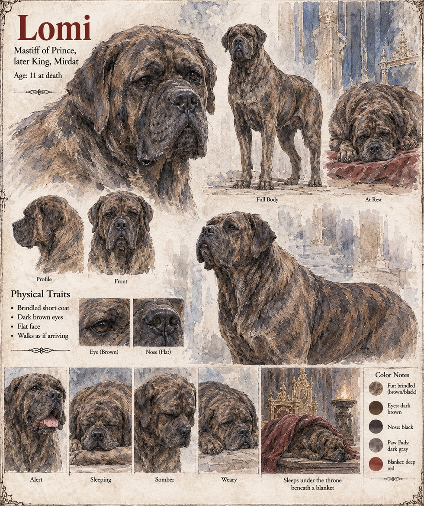

Lomi
Mastiff of Prince, later King, Mirdat · named for the old word for lion · dies at eleven
The smallest pup of a garrison stable-master’s brindled mastiff bitch, a brindled, flat-faced, lugubrious creature that did not so much walk as arrive. Prince Mirdat, seventeen and serving his two years in the Sword’s garrison at Samaghvto, finds that the pup has taken to following him about the Wine Gate yard in the manner of a debt. He has never in his life been followed by anything that wanted nothing. He names it Lomi, the old word for lion, which the dog, with great dignity, ignored. Whatever else he orders in a reign, more men to their deaths than the chronicles have room for, on every one of those nights he warms the dog’s blanket at the brazier before dawn, in the grey half-hour before the horns, with his own hands: the only act of his day that he did not enter in any ledger.
The dog is at the king’s feet when the king reads the Hierarch’s folio and understands that nobody judged his father’s people but that someone billed them, and the king goes to the brazier and warms the blanket, though it is not yet dawn and the dog has not asked. He is against the king’s knee on the wall at the Hail and in the king’s tent in the snow of Ormeli, and on the second day he goes up the mountain with the relief column, because the king could not bear to have him in the tent. He lies beneath the throne at the crowning at Dzirvali, when the king is twenty-four and has the wooden spoon in his sleeve.
He dies in Garren of the Unclouded Year on the floor of the throne room, in the heat, at eleven, an age of some distinction for a mastiff, failing since the spring, his flat face on the cool stone beneath the throne. Orvan’s son gets down from the throne in front of his generals and sits on the floor beside him. He does not warm the blanket; for the first time in eleven years he wets it at the cistern and lays it over the great brindled body and sits with his palm on it until the ribs stop. The manuscript says it is the only act of his reign that the histories record accurately and the only one they take for an eccentricity. The brazier is the one in which Guaram later burns his ledger.
The manuscript gives the brindled coat, the flat face, the walk, the blanket and the throne. The sheet’s dark brown eyes, black nose, dark grey paw pads and deep-red blanket are its own, as are its panels Alert, Sleeping, Somber and Weary and its scene Sleeps under the throne beneath a blanket; its title strip, Mastiff of Prince, later King, Mirdat; Age: 11 at death, follows the manuscript.
“did not so much walk as arrive”